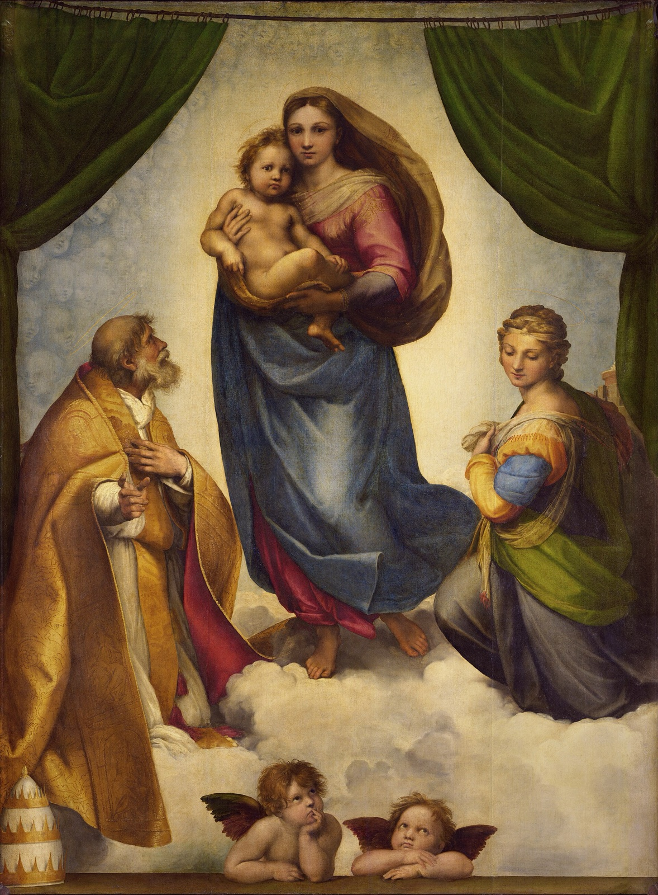

Sistine Madonna Explained: Where the Two Famous Cherubs Come From
How two small angels, added at the last moment to an altarpiece for a monastery church, walked out of the picture and onto postcards, neckties and toilet paper.

Raphael, Sistine Madonna, 1512–1513. Staatliche Kunstsammlungen Dresden.
In 1890 an American lard refinery borrowed two of the most famous angels in art and turned them into winged pigs. That detail comes from a 2012 Maclean's report on the painting's 500th birthday. It is a good measure of how far the pair had travelled from where Raphael put them.
Look at the very bottom of the Sistine Madonna. Two small winged boys lean on a wooden ledge, chins on their hands, gazing upwards. One props his face on a fist; the other folds his arms. Most people who know them have never seen the rest of the picture, a canvas of 269.5 × 201 cm in which they take up only a strip along the lower edge.
They were almost an afterthought.
The last thing Raphael painted
According to the Dresden gallery, Raphael added the two angels at the very end of painting the picture. The museum's catalogue says they "lounge" on the parapet, and gives them more than one job.
Their waiting seems to relate to the Incarnation, the coming of Christ into the world that the painting shows above them. It has also been suggested that they are waiting for the Mass celebrated at the altar in front of the picture, so they can carry the Host up to heaven afterwards. And they have a practical role. Their upward gaze, the museum says, keeps leading the viewer's eye back up into the painting.
They puzzled people from the start. When the picture reached Dresden in the 18th century, the royal gallery's chief superintendent, Carl Heinrich von Heineken, was not impressed. According to Maclean's, he likened the Christ Child to a "peevish child" and cast doubt on whether the two cherubs were authentic at all.
Even the curator of the 2012 anniversary show, Andreas Henning, found them odd. Angels usually play music, sing or play with the Christ Child, he told Maclean's. "But there's no painting in the world, to my knowledge, where they appear to wait in such a bored manner."
A pope, a city and a coffin
The painting was made for a church, not a gallery. Raphael had not yet turned 30 in the summer of 1512, when Pope Julius II commissioned an altarpiece for the monastery church of San Sisto in Piacenza, south-east of Milan.
The timing is telling. In July 1512 the Vatican received news that Piacenza had joined the Papal States, and the Dresden museum assumes this prompted the commission. Julius had close family ties to San Sisto. Raphael had probably finished the work by the time the pope died, in February 1513.
The two saints belong to the church. On the left kneels Pope Sixtus II, a martyr of the third century. On the right is Saint Barbara, also a third-century martyr. Look past her shoulder, at the right edge, and you can glimpse the battlements of a tower: Barbara, Hartt and Wilkins explain, was freed from one. Frederick Hartt and David Wilkins, in their history of Italian Renaissance art, read Sixtus as a portrait of Julius himself. They point to the oak leaves on his golden cope and the acorn on top of the papal tiara that sits on the ledge at lower left.
They also record a darker theory. The picture was Raphael's first Madonna on canvas, perhaps because it was meant to be portable. It has been suggested that it was painted to hang above Julius's bier, and the wooden ledge the angels lean on has been identified as the lid of his coffin. These are proposals, not established fact. But read that way, the two bored boys are leaning on a papal coffin.
The vision behind the curtain
Above the ledge the curtain is drawn back on both sides. Henning describes what Raphael did here as new: a vision painted not for saints inside the picture, but "for the spectator outside of the painting". Mary walks towards us on the clouds, carrying the Child down to earth.
Now look at the pale sky behind her, especially at the left near the curtain. It is not empty. It is made of countless faint angel heads, painted in sky blue. Once you see them, they are everywhere.
The faces of mother and child are serious. The Dresden museum reads that gravity as knowledge of the Passion to come. Infrared images, Maclean's reports, show that the only part Raphael reworked was Mary's expression.
From Piacenza to Dresden in a box of hay
For nearly 250 years the painting stayed in Piacenza, admired by the monks and hardly known outside. Then, after almost two years of hard bargaining, it was bought through Giovanni Battista Bianconi for Friedrich August II, Elector of Saxony and King Augustus III of Poland. The gallery dates the acquisition to 1752–54.
Maclean's describes the journey: packed in a wooden box with hay, the painting took six weeks to cross the Alps, and when winter rain soaked through, the hay had to be changed at a tavern on the way. When it arrived, the story goes, the king pushed his own throne aside to make way for the great Raphael. The Dresden museum calls his words a "legendary saying", and Adolph Menzel drew the scene in a pastel of 1855–59 titled Make room for the great Raphael! Treat it as legend.
Fame came slowly. For decades the Raphael was overshadowed in Dresden by Correggio's Nativity.
How the angels went solo
Around 1800 that changed. The painting began to be copied in paintings and prints. Friedrich Bury painted the Electress Auguste copying it, around 1808–09. The painter Philipp Otto Runge read it as a picture tending towards landscape. In 1802, as Joseph Leo Koerner records, he asked: "Who does not see the spirits in the clouds at sunset?" In his own painting Morning of 1808, Runge turned Raphael's two angels into putti tossing flowers.
At the same moment, the Dresden museum says, the two angels were copied out of the picture on their own for the first time. That, it says, was the start of their solo career.
It never stopped. Maclean's lists them on everything from armbands to almanacs in the 19th century, and German children copying their poses in photographers' studios. Then came the winged pigs. In the 1970s the pair became advertising regulars, turning up on neckties, snow globes, Tupperware, toilet paper and air freshener. Hartt and Wilkins note that in the late 20th century the "somewhat nonchalant" pair were widely reproduced. For the 500th anniversary, the gallery deliberately put Mary back at the centre, under the slogan "The fairest woman in the world turns 500."
To Moscow and back
The painting's own journeys were not over. In the Second World War it was first stored at the Albrechtsburg in Meissen, then in 1943 moved to a disused railway tunnel at Lohmgrund near Rottwerndorf. In July 1945 the Soviet trophy organisation took it to the USSR. Maclean's reports that more than 1,200 works from the Dresden gallery went to Kiev and Moscow.
It spent 1945 to 1955 in Moscow. A Soviet "painting passport" drawn up there in 1955 states that it had not been restored in the USSR. That year it went first to Berlin, for an exhibition marking the decision to return it, and in 1956 it was back in Dresden's Gemäldegalerie Alte Meister.
The Soviet version of the story did not fade. A legend grew that the Red Army had rescued the painting. The Dresden gallery cites Mikhail Kornetsky's painting The rescue of the Madonna of 1984–85, now in the Latvian National Museum of Art in Riga.
Living with the whole picture
On a 16:10 Mac screen the Sistine Madonna, about three-quarters as wide as it is tall, fills the height with a blurred version of itself on either side. artbip never crops it, so the angels keep their ledge and the tiara stays in its corner. At desktop size the faces, the green curtains and the angels read clearly. The faint heads in the sky are the kind of thing you notice on the third or fourth day. The app has a longer note on the painting too.
Download artbip free for Mac — free and open source, macOS 15 or later. Includes a longer note on this painting.
Related
- Leonardo, Lady with an Ermine
- Friedrich, Wanderer above the Sea of Fog
- Ghirlandaio, An Old Man and his Grandson
Sources
- Sixtinische Madonna – Staatliche Kunstsammlungen Dresden, Online Collection
- The Sistine Madonna (exhibition, 2012) – Gemäldegalerie Alte Meister, Staatliche Kunstsammlungen Dresden
- The Sistine Madonna – Google Arts & Culture
- Paul Ruban, "Happy 500th birthday, Raphael cherubs", Maclean's, 30 July 2012 (archived)
- Frederick Hartt and David G. Wilkins, History of Italian Renaissance Art (7th edition, 2011)
- Joseph Leo Koerner, Caspar David Friedrich and the Subject of Landscape (2nd edition)